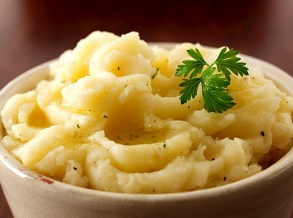

Un rico piré de papas cremoso y con mucho sabor
Lavar y pelar las papas, cortarlas en trozos pequeños y dejar en una olla de agua hirviendo por 15 minutos
Una vez las papas puedan cortarse fácilmente, colarlas para quitar toda el agua
Agregar un trozo de manteca en la olla con papas y, luego de derretirse, pisar las papas hasta crear una mezcla homogenea
Luego de pisar las papas, poner la olla al fuego mínimo nuevamente y agregar la leche junto con la sal y la nuez moscada.
Revolver por unos 2 - 3 minutos hasta que el puré vuelva a calentarse lo suficiente
Listo! con esto ya está listo para servir y acompañar cualquiera de tus comidas!